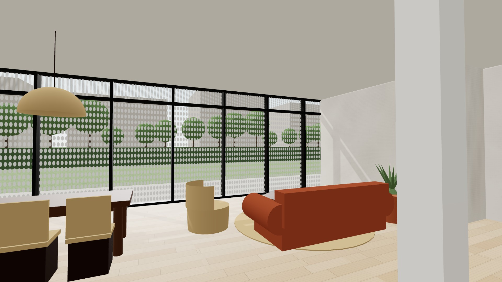

Same windows.
Only the glass changes.
Four products swap on both facades at once, every 20 seconds. The walker never touches a control.
Because the geometry never changes, size can’t bias the result.

Clear · VLT 76% · g 0.53

Neutral · VLT 60% · g 0.33

Frit · VLT 45% · g 0.32

Bronze · VLT 32% · g 0.28